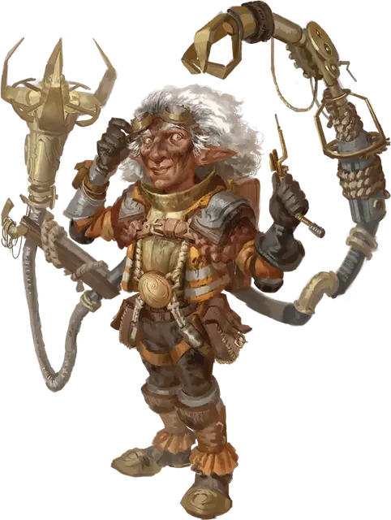

Гном-создатель из Небеспокойсь
Nevermind Gnome Mastermind
Маленький Гуманоид, любое мировоззрение

Класс Доспеха 15 (кожаная броня)
Хиты 82 (15к6 + 30)
Скорость 30 футов, лазая 30 футов
| мод | спас | ||
|---|---|---|---|
| СИЛ | 9 | −1 | −1 |
| ЛОВ | 18 | +4 | +7 |
| ТЕЛ | 14 | +2 | +5 |
| мод | спас | ||
|---|---|---|---|
| ИНТ | 20 | +5 | +8 |
| МДР | 11 | +0 | +0 |
| ХАР | 15 | +2 | +2 |
Навыки Восприятие +3, Магия +8, Расследование +8
Чувства тёмное зрение 60 футов, пассивное Восприятие 13
Языки Общий, Гномий
Опасность 5 (1800 опыта)
Бонус мастерства +3
Особенности
Всегда думая наперед. Создатель совершает броски инициативы с преимуществом.
Паучье лазанье. Создатель может лазать по сложным поверхностям, включая потолки, без совершения проверок характеристик. Эта особенность не работает, если манипулятор хватает существо обеими заводными клешнями.
Действия
Мультиатака. Создатель совершает две атаки Заводной клешней. Создатель может заменить одну из этих атак на «Создать гаджет», если он доступен.
Заводная клешня. Рукопашная атака оружием: +7 к попаданию, досягаемость 20 футов, одна цель. Попадание: 11 (2к6+4) колющего урона, и если цель — существо с размером не больше Среднего, она становится схваченной (Сл высвобождения 15). Пока цель схвачена, она получает 10 (3к6) колющего урона в начале каждого хода создателя. У создателя две клешни, каждая из которых может схватить одну цель.
Создать гаджет (перезарядка 5–6). Создатель быстро собирает заводной гаджет, производящий один из следующих эффектов (на выбор создателя):
Схваченное дребезжание. Части этого гаджета выглядят как скрежещущие металлические зубы. Этот гаджет бросается к существу, которое создатель может видеть в пределах 60 футов от себя. Существо должно преуспеть в спасброске Ловкости Сл 16, иначе получит 31 (7к8) колющего урона и станет недееспособным до начала следующего хода создателя.
Фазменный шар. Создатель бросает этот гаджет в точку, которую видит в пределах 30 футов от себя, где гаджет выпускает облако газов, разрушающих сознание в сфере с радиусом 10 футов. Каждое существо в пределах сферы должно преуспеть в спасброске Мудрости Сл 16, иначе получит 11 (2к10) урона психической энергией и станет напуганной до начала следующего хода создателя.
Громовой Крик. Этот гаджет издает визжащую звуковую волну в 30-футовом конусе, исходящем от создателя. Каждое существо в этой области должно пройти спасбросок Телосложения Сл 16, получив 21 (6к6) урона звуком при провале или половину этого урона при успехе.
Описание
Гора Небеспокойсь — полый, спящий вулкан на острове Санкрист в Кринне. Внутри горы живет активное сообщество скальных гномов - жестянщиков и других изобретателей, неустанно изучающих различные научные дисциплины, чтобы создавать механические чудеса.
Гномы-создатели горы Небеспокойсь подкрепляют свое творчество многолетним опытом. Хотя они по-прежнему создают дикие изобретения по своей прихоти, эти мастера также владеют по крайней мере одним более стабильным заводным изобретением — как правило, это что-то, что позволяет создателю больше двигаться, расширяет его возможности за счет дополнительных придатков или и того, и другого.